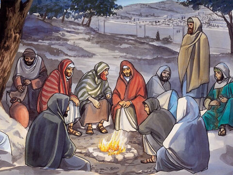
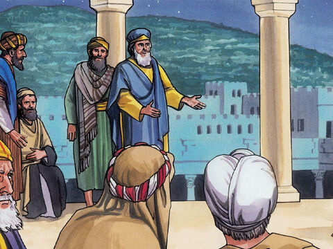

The Plot To Kill Lord Jesus
And it came to pass, when Jesus had finished all these sayings, he said unto his disciples,
Ye know that after two days is the feast of the passover, and the Son of man is betrayed to be crucified.
Then assembled together the chief priests, and the scribes, and the elders of the people, unto the palace of the high priest, who was called Caiaphas,
And consulted that they might take Jesus by subtilty, and kill him.
But they said, Not on the feast day, lest there be an uproar among the people.
Matthew 26:1-5
- 
- 